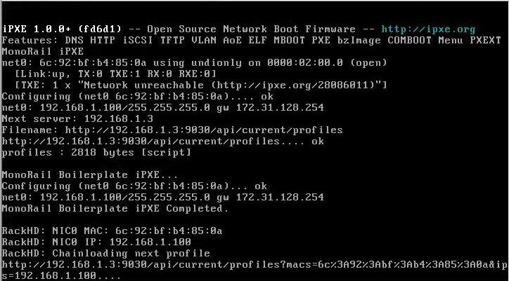
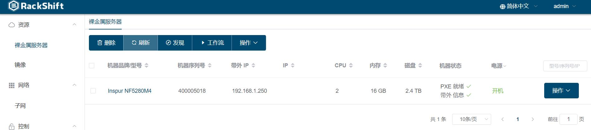

部署您的第一台物理机
以浪潮5280M4为例
部署 RackShift
- 通过 快速开始 提供的方式部署 RackShift
初始化 RackShift
- 配置 PXE 使用的 DHCP 网段

- 上传用于装机的 Centos7.X 镜像

注意：
- 用户部署的 RackShift 服务器至少有一张网卡与物理机 PXE 网卡是直连。并且配置开启 PXE 的 DHCP 网段必须和该网卡处于同一段。
- 用于 PXE 的网络中不能存有其他 DHCP 服务器。
PXE 启动物理机
您可以选择以下几种方式 PXE 启动物理机
- 手动启动物理机，选择从网络启动
- 打开远程 KVM 控制台，选择从网络启动
-
在 RackShift 服务器或与物理机带外连通的服务器上面安装 ipmitool 工具执行如下命令
- ipmitool -I lanplus -H xxx -U xxx -P xxx chassis bootdev pxe
- ipmitool -I lanplus -H xxx -U xxx -P xxx chassis power on / reset
如果一切顺利，您将会在物理机显示器上看到如下的画面，表示物理机正在执行首次的发现流程，这个过程需要耗费几分钟,请您耐心等待。


等待几分钟后您将会在裸金属列表看到这台发现完毕的物理机 
配置带外信息
您选择这条物理机的记录，点击操作->点击带外信息
 输入该机器的带外账号密码点击确定，至此 RackShift 将会拥有对该物理机进行自动化部署的能力。
输入该机器的带外账号密码点击确定，至此 RackShift 将会拥有对该物理机进行自动化部署的能力。